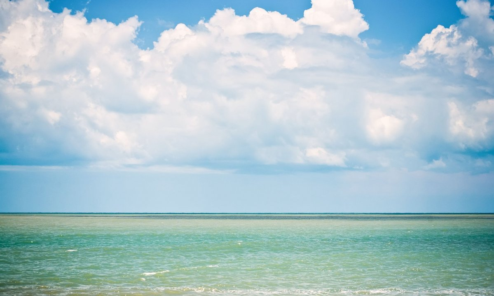
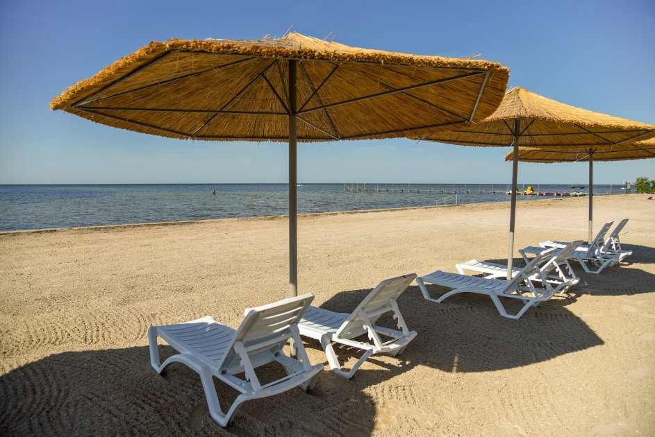

Затока (Одеська область)
Курорт розташований в 62 кілометрах від Одеси, на Будакській косі, що розділяє
Чорне море і
Дністровський лиман.
До послуг гостей 20 кілометрів широких піщаних пляжів з пологим входом
в
море, близько 200 пансіонатів, гостьових будинків і баз відпочинку, розваги на будь-який смак.
Середня температура повітря влітку +22...+23 °C, море біля берега до початку липня
прогрівається
до +19...+23 °C. Купальний сезон триває з кінця травня до початку жовтня.
У приватному секторі можна зняти житло за 100 гривень, номер без зручностей коштує від 150
гривень, з зручностями — від 350 гривень на добу з людини.
Пляжі в Затоці відносно чисті, відпочиваючим пропонують стандартний набір розваг: катання на
«банані», оренду катамаранів, човнів і скутерів.
Також можна під наглядом інструкторів з
місцевого яхт-клубу освоїти віндсерфінг або кайтсерфінг.
Курорт облюбували сім'ї з дітьми, але й молоді тут є чим зайнятися. Крім дискотек є розважальний
комплекс «Центр Літа», де проводяться концерти та інші заходи. Доступні також спортивні
майданчики, караоке-клуби та кінотеатри (в основному на території готелів і пансіонатів).
До мінусів Затоки можна віднести забруднене повітря: по косі проходять жвава автомагістраль і
залізнична гілка.
Цікаві місця поблизу:
- Білгород-Дністровська фортеця — найбільше зміцнення на території України;
- центр культури вина Шабо — єдиний в країні комплекс, який об'єднав діючий винзавод, старовинні винні підвали, музей вина і виноробства, виставку сучасного мистецтва і дегустаційний зал;
- дельфінарій «Немо» в Одесі;
- аквапарк «Одеса» на 7 кілометрі Овідіопольської дороги.
Як дістатися в Затоку:
- потягом до станції Бугаз. Тут зупиняються поїзди (зокрема, Києва) і електрички з Одеси;
- автобусом зі столиці та інших міст. Крім регулярних рейсів в сезон запускають додаткові;
- автобусом або маршруткою з Одеси (від 50 гривень);
- машиною через Одесу. Від Києва курорт відокремлюють 530 кілометрів від Харкова — 770, від Дніпра — 630.
Кароліно-Бугаз (Одеська область)
Село в Овідіопольському районі Одеської області, на 51 кілометрі від
Одеси. Із заходу омивається
водами Дністровського лиману, із заходу — Чорним морем. Підходить в основному для сімейного
відпочинку з дітьми, молоді тут може бути нудно.
Середня температура повітря влітку
+22...+23 °C, море прогрівається до +19...+23 °C, але час від
часу штормить, після чого вода стає холодною. Купальний сезон триває з кінця травня до середини
вересня.
У приватному секторі можна зняти житло за 85-150 гривень, номер із зручностями коштує від 250
гривень з людини в добу. Окремий будинок обійдеться вам до 5 000 гривень в день.
Пляжі в Кароліно-Бугазі піщані, широкі (близько 100 метрів) і чистіші, ніж у Затоці. Найбільше
відпочивальників зазвичай на пляжі, розташованому в районі дороги, що веде з центру села. Тут же
базуються нехитрі розваги: прокат катамаранів і човнів, катання на «бананах» і водних
мотоциклах. Ті, хто шукає усамітнення, вибирають пляжі на півночі курорту.
Дитячі та спортивні майданчики, кафе і дискотеки розташовані в основному на території готелів і
пансіонатів, яких тут не дуже багато. За покупками можна відправитися в Затоку, куди ходять
автобуси, маршрутки і електрички.
Мінус той же — проходять через курорт автомагістраль і ЖД вітка, що забруднюють повітря.
Цікаві місця поблизу:
- Білгород-Дністровська фортеця — найбільше зміцнення на території України;
- центр культури вина Шабо — єдиний в країні комплекс, який об'єднав діючий винзавод, старовинні винні підвали, музей вина і виноробства, виставку сучасного мистецтва і дегустаційний зал;
- дельфінарій «Немо» в Одесі;
- аквапарк «Одеса» на 7 кілометрі Овідіопольської дороги.
Як дістатися в Кароліно-Бугаз:
- потягом до станції Бугаз. Тут зупиняються поїзди (зокрема, Києва) і електрички з Одеси;
- автобусом зі столиці та інших міст. Крім регулярних рейсів в сезон запускають додаткові;
- автобусом або маршруткою з Одеси (від 50 гривень);
- машиною через Одесу. Від Києва курорт відокремлюють 520 кілометрів, від Харкова — 760, від Дніпра — 620.
Залізний порт (Херсонська область)
Молодіжний курорт на Чорному морі. До послуг гостей: широкі піщані пляжі, безліч розваг, близько 300 готелів, пансіонатів і баз відпочинку. Вважається екологічно чистим: у місті і поруч з ним немає промислових підприємств, завантажених автомагістралей і портів. Середня температура повітря влітку: +26...+30°C, води: +20...+23°C, але після шторму море може виявитися холодним навіть у спеку.

Зняти житло в приватному секторі можна за 80-200 гривень, номер без зручностей варто 150-250
гривень, з зручностями — 250-500 гривень з людини в добу.
Пляжі безкоштовні, піщані з домішкою дрібного черепашки, вхід у воду пологий. Крім стандартних
розваг є дайвінг-центр, де можна взяти напрокат спорядження і пройти навчання.
Окрім кафе, ресторанів і магазинів у Залізному порту є аквапарк і луна-парк. Є також зони
відпочинку, обладнані шезлонгами і парасольками, які здаються в оренду.
До мінусів можна віднести те, що на пляжах досить брудно. Під час штормів вода викидає на берег
водорості, а відпочиваючі вносять свою лепту, залишаючи сміття. Контейнерів мало, вони
зосереджені в зонах, де розставлені шезлонги.
Цікаві місця поблизу:
- цілющий гейзер, лікування водами якого показано при захворюваннях опорно-рухового апарату, щитовидної залози та нервової системи;
- острів Джарилгач — один з найбільших в Україні. Його довжина — понад 40 кілометрів, ширина — від 100 метрів до 5 кілометрів. Тут можна відпочити на одному з диких пляжів або зайнятися дайвінгом;
- біосферний заповідник «Асканія-Нова». На території площею близько 33 000 гектарів збереглися ділянки незайманої степу, тут проживає близько 3 000 видів тварин (бізони, антилопи, страуси та інші) і росте близько 500 видів рідкісних рослин;
- Чорноморський біосферний заповідник. Займає територію площею більше 100 000 гектарів, включаючи кілька островів. Тут можна побачити близько 600 видів рослин і 400 видів хребетних тварин.
Як дістатися в Залізний порт:
- поїздом або автобусом в Херсон, а потім автобусом від ЗАЛІЗНИЧНОГО вокзалу або автостанції (від 110 гривень);
- автобусом зі столиці та інших міст. Крім регулярних рейсів в сезон запускають додаткові;
- машиною. Від Києва курорт відокремлюють 640 кілометрів від Харкова — 680, від Дніпра — 400..
Скадовськ (Херсонська область)
Портове і курортне місто на березі Джарилгацької затоки Чорного моря, в 94 кілометрах від Херсона. Доступні ціни, піщані пляжі і цілюще повітря зробили його найпопулярнішим дитячим морським курортом України. Середня температура повітря в липні: +24°C, вода прогрівається до +30°C. Купальний сезон триває з травня по вересень..

Зняти житло без зручностей можна за 80-250 гривень, номер з зручностями — за 100-500 гривень з
людини в добу. Оренда однокімнатної квартири обійдеться в 450-750 гривень, будинки на узбережжі
— від 1 500 гривень в день.Пляжі переважно безкоштовні. На міському, розташованому біля
набережної, є навіси, кабінки для
переодягання, туалети та урни. Тут завжди людно, тому іноді брудно.
Інфраструктура розвинена, ресторани і розваги зосереджені на набережній. Є аквапарк «Акваторія»,
дельфінарій «Акварель», парк розваг «Острів скарбів», для любителів спорту є тенісні корти і
школа кайтінга. Покататися на «банані», політати на парашуті або взяти напрокат катамаран вам,
звичайно, теж запропонують.
Мінуси:
- узбережжя в районі порту забруднене, в тому числі, паливом;
- у серпні затока «цвіте», тимчасово стаючи непридатним для купання;
- вхід у воду пологий, мілководдя протяжне, тому затока погано підходить для дорослих в принципі і для любителів попірнати зокрема.
Цікаві місця поблизу:
- цілющий гейзер, лікування водами якого показано при захворюваннях опорно-рухового апарату, щитовидної залози та нервової системи;
- острів Джарилгач — один з найбільших в Україні. Його довжина — понад 40 кілометрів, ширина — від 100 метрів до 5 кілометрів. Тут можна відпочити на одному з диких пляжів або зайнятися дайвінгом;
- біосферний заповідник «Асканія-Нова». На території площею близько 33 000 гектарів збереглися ділянки незайманої степу, тут проживає 3 000 видів тварин (бізони, антилопи, страуси та інші) і росте близько 500 видів рідкісних рослин;.
- Чорноморський біосферний заповідник. Займає територію площею більше 100 000 гектарів, включаючи кілька островів. Тут можна побачити близько 600 видів рослин і 400 видів хребетних тварин.
Як дістатися в Скадовськ:
- поїздом до Херсона, а потім автобусом (2 години, квиток коштує близько 75 гривень);
- автобусом зі столиці та інших міст. Крім регулярних рейсів в сезон запускають додаткові;
- машиною. Від Києва курорт відокремлюють 650 кілометрів від Харкова — 630, від Дніпра — 370.
Коблево (Миколаївська область)
Селище, орієнтований на сімейний відпочинок, розташований в 56 кілометрах
від Одеси і в 79
кілометрах від Миколаєва. Чисті піщані пляжі, цілюще повітря (суміш морського бризу і запаху
хвої з лісів по сусідству), добре розвинена інфраструктура роблять його одним з фаворитів серед
тих, хто хоче оздоровити малюків.
У найспекотніші місяці, в липні і серпні, повітря прогрівається до +35°C, а вода до +26°C.
Завдяки особливому мікроклімату цих місць, такі температури переносяться набагато легше, ніж у
містах. Сезон починається в кінці травня, хоча вода у цей час ще прохолодна, близько +18°C.
Бюджетне житло можна знайти в селищі Коблево, приблизно в годині ходьби від пляжів. На узбережжі ціни вище. Житло біля моря без зручностей обійдеться вам в 110-350 гривень, номер з зручностями — 350-700 гривень на добу з людини. Вартість оренди котеджу на шістьох — від 4 000 гривень на добу. Для тих, хто звик відпочивати «дикуном», є охоронювані кемпінги на березі моря, де за можливість поставити намет беруть близько 60 гривень на добу з людини.
Протяжність берегової лінії — близько 7 кілометрів. В західній частині курорту пляжі піщані, на сході — з домішкою черепашок, всі вони безкоштовні (можна взяти напрокат шезлонг і парасоля за 50-80 гривень в день). Море біля берега дрібне, дно пологе. Мінус один — брудно. На пляжах пансіонатів і готелів проводиться регулярне прибирання та просіюється пісок, а на чистоту публічних відпочиваючі часто скаржаться.
У курортній зоні є аквапарк «Коблево» і міні-аквапарк «Орбіта» на території однойменної бази відпочинку, дельфінарій «Немо», луна-парк з атракціонами для дітей і дорослих, «Родео-парк» з басейном, тиром, волейбольним майданчиком, атракціонами і міні-гольфом.
Незважаючи на те, що курорт орієнтований на сім'ї, є і розваги для молоді: кілька нічних клубів і комплекс «Міленіум-хол», де працює кінотеатр і проходять концерти.
Цікаві місця поблизу:
- винзавод «Коблево», за яким проводяться екскурсії з дегустацією;
- Тилігульський регіональний ландшафтний парк в смт. Березанка, де можна відпочити в тиші або порибалити.
Як дістатися в Коблево:
- поїздом або автобусом до Одеси чи Миколаєва, а потім автобусом (50-60 гривень);
- автобусом зі столиці та інших міст. Крім регулярних рейсів в сезон запускають додаткові;
- машиною. Від Києва курорт відокремлюють 520 кілометрів, від Харкова — 650, від Дніпра — 400.